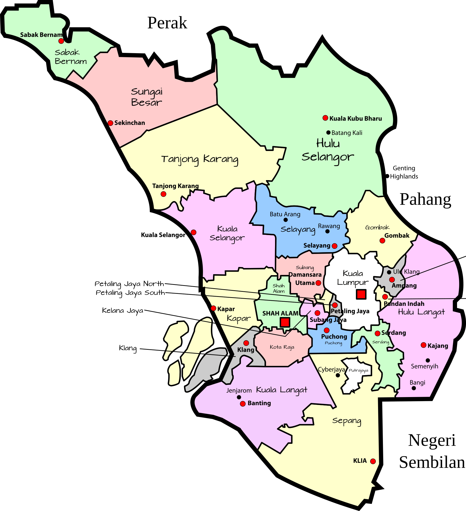

Contact Us
We'd love to hear from you! Reach out to us with any questions or feedback.


Our Locations
Click on the map to explore Tentang Bulan Cafe:
Why We Chose Tentang Bulan Cafe in Tanjung Karang
Tanjung Karang, Selangor, is a hidden gem that embodies serenity and natural beauty, making it an ideal location for our main branch of Tentang Bulan Cafe. Surrounded by lush greenery and expansive paddy fields, this tranquil area offers a refreshing escape from bustling city life. Its calm and picturesque atmosphere resonates deeply with our vision of providing a relaxing and aesthetic space where visitors can unwind, enjoy delicious meals, and forge meaningful connections.
The strategic location of Tanjung Karang enhances its appeal. Situated within easy reach of major highways and towns, it is accessible to both locals and travelers seeking unique dining experiences. The warm and welcoming community adds to its charm, creating a sense of belonging for everyone who visits. At Tentang Bulan Cafe, we aim to integrate into this vibrant community by offering a space that feels like home, whether you're stopping by for a cup of coffee or celebrating a special occasion with loved ones.
Beyond its natural beauty and accessibility, Tanjung Karang represents an opportunity to blend modern cafe culture with local traditions. The area’s rich cultural heritage inspires our menu, which features a fusion of classic local flavors and innovative culinary creations. By choosing Tanjung Karang as our flagship location, we hope to contribute to its growing reputation as a destination for relaxation and culinary excellence. Tentang Bulan Cafe is more than a cafe—it's a sanctuary for creativity, connection, and unforgettable moments.